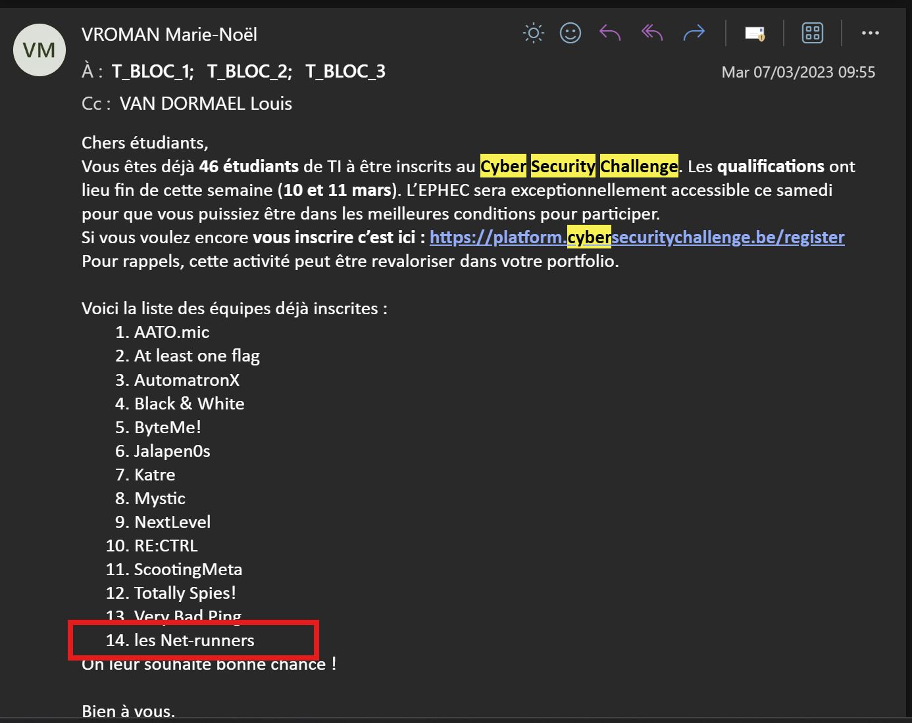
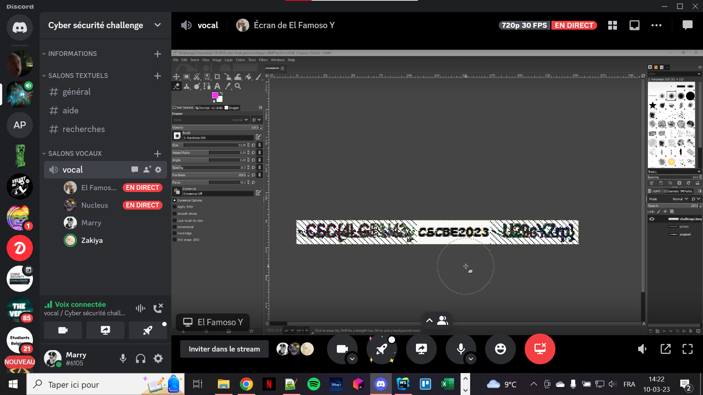
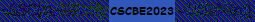

1. Cadre de l'activité
Le CyberSecurity Challenge Belgium est une compétition nationale de cybersécurité organisée chaque année à destination des étudiants belges. J'ai participé à cette compétition en 2023 dans le cadre de mes études à l'EPHEC, avec mon équipe baptisée Les Net-runners, composée de 4 membres.
Un CTF (Capture The Flag) est une compétition où les participants doivent résoudre des défis informatiques pour trouver des "flags", c'est-à-dire des codes cachés qui prouvent qu'on a réussi à résoudre l'épreuve. Les défis couvrent des domaines variés comme la cryptographie, la sécurité réseau, le forensics ou encore le reverse engineering.
2. Ce que j'ai appris
Durant cette compétition, j'ai été confrontée à des défis concrets de cybersécurité que je n'avais jamais rencontrés auparavant. Nous avons notamment travaillé sur des épreuves de cryptographie, où il fallait déchiffrer des messages encodés, ainsi que sur des défis liés à la sécurité réseau. L'un des défis les plus mémorables était de retrouver un flag dissimulé dans des données colorées, ce qui nécessitait de comprendre des techniques de stéganographie.
Au-delà des compétences techniques, cette expérience m'a appris à travailler efficacement en équipe sous pression et dans un temps limité. Chacun devait prendre en charge les épreuves correspondant à ses points forts, ce qui demandait une bonne communication et une organisation rigoureuse. J'ai également développé ma capacité à rechercher des solutions de manière autonome face à des problèmes que je ne connaissais pas.
3. Lien avec mon projet professionnel
La cybersécurité est un domaine incontournable dans le secteur IT, et encore plus dans l'esport où les infrastructures réseau et les plateformes de jeu sont des cibles fréquentes d'attaques. Participer à ce challenge m'a permis de développer une sensibilité à la sécurité informatique qui sera précieuse dans mon futur rôle de staff technique lors d'événements esport.
4. Preuve de participation
Mail de la professeure confirmant la participation, screenshot du call Discord avec l'équipe et flag obtenu lors de la compétition.


